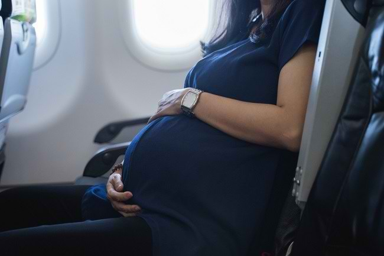

Hal pertama yang wajib Bumil lakukan sebelum bepergian dengan pesawat adalah berkonsultasi dengan dokter kandungan. Hal ini sebaiknya tetap dilakukan meski Bumil menjalani kehamilan normal. Selain itu, Bumil juga disarankan untuk mengecek aturan maskapai penerbangan yang akan digunakan terkait kebijakan ibu hamil naik pesawat.
Nah, agar tubuh Bumil tetap sehat dan perjalanan udara menjadi nyaman, ada beberapa tips aman yang dapat dilakukan, antara lain :
- Konsumsi banyak cairan agar tubuh tidak dehidrasi.
- Kenakan pakaian yang longgar dan terasa nyaman.
- Pilih tempat duduk yang bisa memberikan banyak ruang untuk bergerak, seperti kursi di sebelah lorong.
- Gunakan dan kencangkan sabuk pengaman di bawah perut.
- Jangan terlalu lama duduk. Sebisa mungkin berjalan-jalanlah sebentar di lorong agar sirkulasi darah menjadi lancar.
- Jika hal itu tidak memungkinkan, regangkan pergelangan kaki Bumil selama berada di tempat duduk.